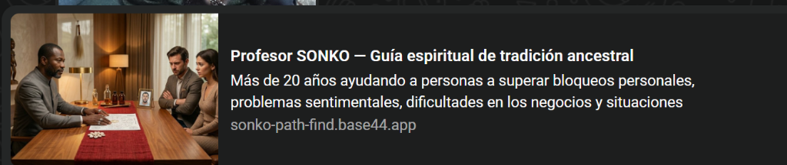

Guía espiritual de tradición ancestral africana
☎ +34 632 37 21 52La distancia crece sin explicación. Lo que antes funcionaba ya no es lo mismo.
Pones esfuerzo, tomas decisiones, pero nada avanza.
Cuando una situación se resuelve, aparece otra.
Tienes capacidad y voluntad, pero los resultados no llegan.
Una inquietud que no tiene nombre y no encuentras su origen.
El ambiente en casa se ha vuelto pesado.
Orientación espiritual para conflictos de pareja, distanciamiento emocional o recuperar la armonía.
Rituales tradicionales para limpiar bloqueos espirituales o situaciones de negatividad persistente.
Rituales para fortalecer la protección espiritual frente a preocupaciones constantes.
Apoyo espiritual cuando los proyectos no avanzan o surgen dificultades profesionales.
Apoyo espiritual en momentos de conflicto o procesos legales que generan preocupación.
Orientación espiritual para recuperar la armonía emocional y personal.
Profesor Sonko forma parte de una tradición espiritual familiar originaria de Senegal, donde las prácticas de orientación espiritual y los rituales ancestrales se transmiten de generación en generación.
Desde muy joven fue formado dentro de esta tradición familiar, aprendiendo métodos espirituales utilizados durante décadas.
Contacta por teléfono o WhatsApp y explica brevemente tu situación.
Se analiza tu situación personal de forma individual.
Profesor Sonko orienta sobre el tipo de práctica espiritual que puede ayudar a recuperar el equilibrio.
Después de hablar con Profesor SONKO sentí mucha claridad sobre lo que estaba ocurriendo.
Sentía que todo estaba bloqueado y nada avanzaba. Después de la consulta empecé a ver las cosas de otra manera.
Mi negocio pasaba por un momento muy complicado. La orientación me ayudó a tomar decisiones importantes.
Teléfono / WhatsApp: +34 632 37 21 52
Hablar por WhatsAppRespuesta rápida, atención directa. Confidencial y sin compromiso.